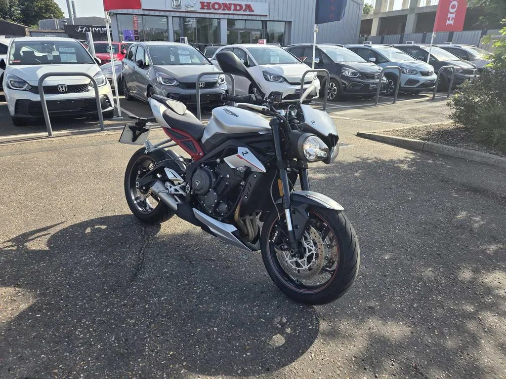

Street Triple R
2018 Street Triple R in silver, 8,766 miles, £5,290.
Seller: John Banks Honda Cambridge, Cambridge · 01223633410
Key facts
| Price | £5,290 |
|---|---|
| Year | 2018 |
| Miles | 8,766 miles |
| Model | Street Triple R · Silver |
| Location / dealer | John Banks Honda Cambridge, Cambridge |
| Distance from Poole | ≈ 137 miles as the crow flies (straight line from Poole BH15 1AA, estimated from “Cambridge”) |
| On the lists | All bikes |
| Registration | KW18 HTO (stated in ad (listing data)) |
| Seller type | Trade (ad) |
| Condition (ad) | Used |
| Phone (ad) | 01223633410 |
| From the ad | “<p>Introducing the 2018 Triumph Street Triple R (17MY), a splendid manifestation of British engineering in the world of motorcycles. With only 8,766 miles on the clock, this silver beauty exudes a perfect blend of style and performance. As a 'naked' bike, it boasts a pristine design that showcases its athletic build without excessive fairings, offering a minimalist yet aggressive appeal.\n\nPowering this machine is a…” |
Facts marked (ad) come from the listing. Ask the seller to show you the paperwork.
Why buy it
- The original 765 triple: the same engine family as today’s bikes, for less money
- Check the service history and tyres, as on any older bike
Things to check
- Service history
Ask for stamped or invoiced services, and the date of the last valve check.
- TB262 valve spring retainer
Triumph’s technical bulletin TB262 lists the Street Triple R and RS without giving years, so ask the dealer whether it applies to this engine. It is a workshop bulletin, not a safety recall. Also ask for an outstanding-recall check on the frame number. Source: Triumph TB262 ↗
- Quickshifter
Test both up and down shifts. Owners of the later 2023+ bikes have reported sensor failures. Source: MCN owners’ reviews ↗
History check ✓ Plate verified
| Registration | KW18 HTO (stated in ad (listing data)) |
|---|---|
| Make / model | Triumph |
No MOT tests yet. The bike is under 3 years old, and the first MOT is due on the date above.
Sources: Total Car Check (DVLA data) · CarCheck (MOT tests) · GOV.UK MOT history. Checked 12 Oct 2026.
2017–19 Street Triple R
The spec sheet covers the 2020+ models only, so this earlier model isn’t in it.
Sources: Triumph UK – Street Triple 765 spec · Triumph media – 2023 range · Triumph – Moto2 spec · Triumph UK – 765 RX · Triumph media – 2020 RS · MCN – 2020–22 RS review · Motorcycle.com – 2020 RS first ride · Motorcycle.com – 2020 R first look
The verdicts
Seller: John Banks Honda Cambridge, Cambridge · 01223633410